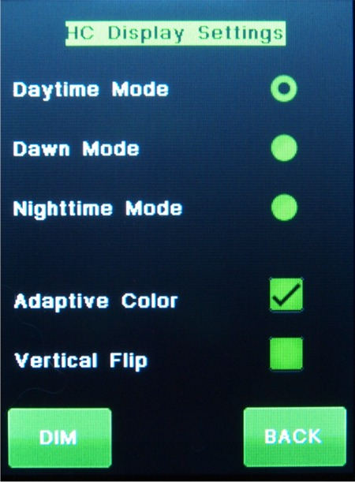

| Interactive Hand-Controller Menus - click on green button to Navigate |
|

A word of caution. You cannot do an Screen calibration when the Screen is flipped. If you do you will have a problem. |
This screen allows you to select the screen color you what to view the hand controller in. If the adaptive color check-box is checked, then the screen will change color automatically
at startup (provided the color mode is selected and saved.) Here is how it does that:
The color change is only done at startup. The altitude of the sun is calculated. Above horizon screen will be green, down to 10 degrees below horizon blue. Below 10 degrees, the color that was saved will be used. So your site and time have to be set correctly for this to happen. If the adaptive color is unchecked, the screen will startup in what ever color is checked. The nighttime mode screen uses X to indicate a button push. This is because the screen is so dark that a change in high-lights cannot be distinguished. Note: for these setting to stick through power off and back on, use the back button, then store setting. The Dim button will dim the display in 8 Steps. When not in the brightest setting a BRIGHT button will also be shown. There is a chart on how the screen reacts on the default color setting page There is a new option to flip the screen 180° on the Himax graphics version of the hand controller. (With L5.2 firmware only) Click the Flip checkbox to flip or un-flip the screen. To get either option to stay, hit the back button and then the "Store Setting" button. |